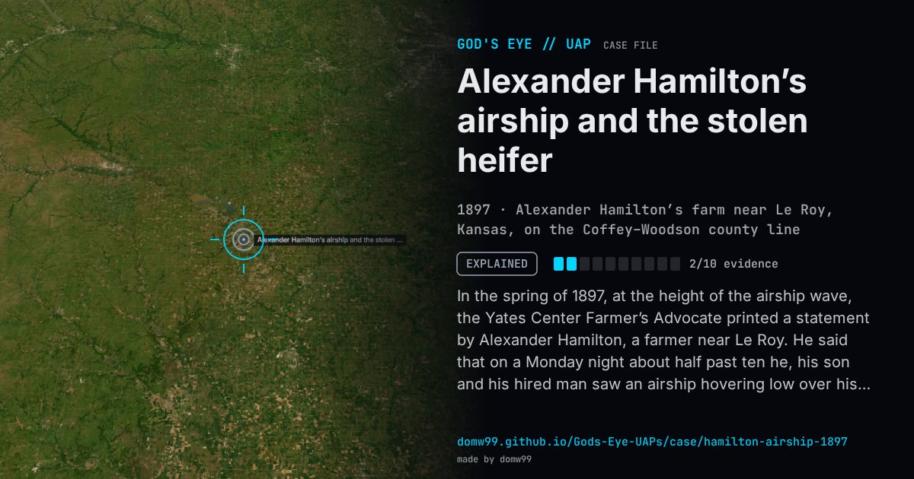

Alexander Hamilton’s airship and the stolen heifer

In the spring of 1897, at the height of the airship wave, the Yates Center Farmer’s Advocate printed a statement by Alexander Hamilton, a farmer near Le Roy. He said that on a Monday night about half past ten he, his son and his hired man saw an airship hovering low over his cattle pen. A red cable from the ship had caught a heifer by the neck; unable to free her, they cut the fence wire and watched “ship, cow and all rise slowly and sail off”. The next day, he said, the heifer’s hide, legs and head were found some 13 miles away. A dozen local worthies signed a statement that Hamilton was a man of truth. Retellings date the night to April 19 or to a week earlier.
Explanation
A tall tale. Hamilton belonged to a local liars’ club; the 1897 editor later suggested that Hamilton knew he had made the story up, and the UFO historian Jerome Clark found people in the area who had heard him admit it. It is listed among the classic airship hoaxes of 1897.
What was seen
Shape: A large cigar-shaped airship hovering low over the cattle pen, trailing a red cable
Witnesses: Alexander Hamilton, his son and a hired man, by Hamilton’s account; a statement vouching for him was signed by a dozen local men
Duration: Minutes
Sources
- Wikipedia — List of UFO-related hoaxes (airship hoaxes)
- KANSAS! Magazine — Airship alert (the Hamilton story and how it unravelled)
Browse
- United States
- Before 1900
- Explained
- Historical accounts
- Many independent witnesses
- Physical traces
- Cylinders and cigar shapes